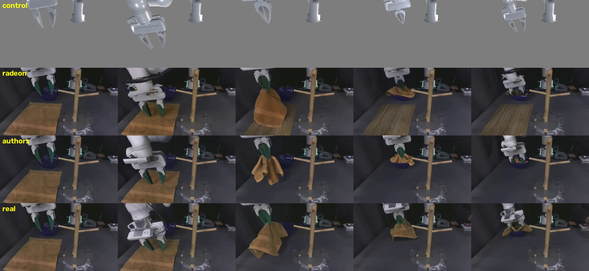
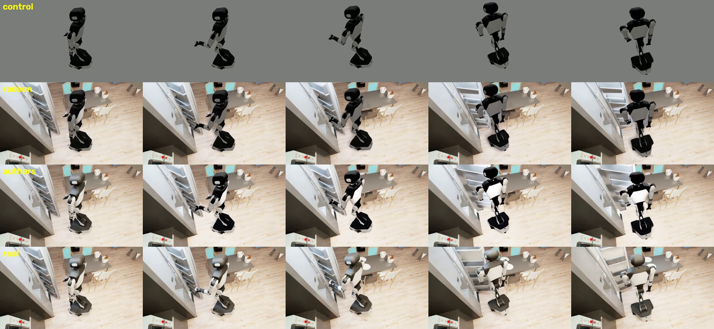
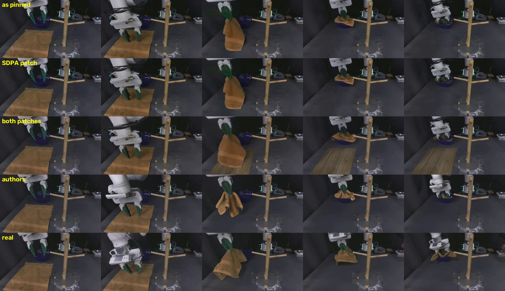

Masked Visual Actions · 2026.11.11
Show It the Arm and It Plays the World; Show It the Cup and It Plays the Robot: Masked Visual Actions on a W7900



Video generation models have seen more of "how things move" than any robot data set: how a towel hangs when it is lifted, which way a cup slides when nudged, how the shadow of a cabinet door shifts as a drawer opens. Robotics has long wanted to use these priors as a world model. The hard part is not whether the model is big enough but how to talk to it. Tell it "move the end effector 3 cm forward and close the gripper" and it does not understand; it learned pixels, not joint angles.
Masked Visual Actions answers directly: do not translate actions into the model's foreign language; speak its mother tongue. An action is a patch of pixels in the video that has been "revealed." Draw how the robot arm moves along its path, paint everything else gray, and leave the rest to the model to fill in: whether the cup gets knocked over, whether the towel gets lifted.
The work comes from Stanford, the University of Maryland and Harvard, by Hadi Alzayer, Wenlong Huang, Haonan Chen, Christopher Luey, Lvmin Zhang, Maneesh Agrawala, Gordon Wetzstein, Fei-Fei Li, Yilun Du, Jiajun Wu and Jia-Bin Huang. The paper is arXiv:2607.19343 and the project page is masked-visual-actions.github.io. They fine-tuned a 14B video model on only about 15 hours of masked samples, and the same checkpoint works as both a forward model and an inverse model.
Which language should actions speak
There is already a long list of ways to add control signals to a video model: text, point tracks, forces, keypoints, motor commands. Text is expressive but vague; "the robot arm picks up the cup" can be done ten thousand ways. Point tracks and keypoints are more precise, but they are sparse, and the model has to guess the geometry and contact on its own. Motor commands and end-effector poses are the most precise, but every robot has its own set. Models like Ctrl-World that eat raw robot state do very well on the embodiment they were trained on, and break on a different robot: in the paper's Figure 5, facing the unseen two-armed R1 Pro, its output is either a frozen frame or a broken one.
The paper's Figure 2 lays these representations out on a spectrum: low-dimensional action vectors are compact but do not line up with the image; end-effector poses and skeleton visualizations are visible but sparse, leaving the model to fill in geometry, contact and interaction; masked visual actions are dense and aligned pixel for pixel. The authors' bet is that the action representation should live in the space where the video model learned its interaction priors, which is pixel space.
Behind the bet is a plain fact: every robot has its own action space, and the pixel canvas is the only one all robots share. A Franka, an R1 Pro, even a snake robot, when drawn, is a mass of moving pixels.
A fill-in-the-blank: what you reveal is what you ask about
The formalism is short. Treat a scene as a set of entities \(e_1, e_2, \ldots, e_n\): the robot arm, the cup, the towel, the cabinet door. A video model implicitly learns the joint distribution of their trajectories, \(p(e_1, \ldots, e_n)\). Pick a subset \(\mathcal{S}\) as the condition and you get the conditional distribution:
\[ p\bigl(\{e_i\}_{i\notin\mathcal{S}} \,\big|\, \{e_j\}_{j\in\mathcal{S}},\, I_0\bigr) \]
where \(I_0\) is the reference frame of the initial scene. It is implemented with a mask: \(M\) is the union of the pixels these entities occupy in space and time, the model's input is \(M\odot V\) plus \(I_0\), and it learns \(p_\theta(V \mid M\odot V, I_0)\). This is the same idea as BERT's masked language modeling, and it follows Bar et al.'s work on visual prompting through image inpainting.
The interesting part is how \(\mathcal{S}\) is picked. The authors split entities into two kinds: those that move on their own are active entities (robot arms, people), and those carried along are passive entities (the cup being grasped). Reveal the active entity and the model predicts the passive ones; it is an action-conditioned forward dynamics model: give it the arm's action, and it plays out the world's response. Reveal the passive entity instead, say "I want the cup to travel along this path," and the model fills in how the arm should move, becoming an inverse model. A traditional action-conditioned world model has no such direction.
The paper stresses that active and passive are not properties of the model but ways of asking. The most surprising point: during training only the robot was ever revealed, never an object; yet at inference, reveal an object's motion and the model fills in the robot zero-shot. The authors' explanation is that the conditioning signal is well enough aligned with the representations the model learned; in controlled comparisons, sparse signals such as low-dimensional actions or skeletons do not generalize this way. Seen from another angle it also makes sense: what the model learned was never the mapping "action to world," but "complete the masked video." Revealing the robot or revealing the cup is, to it, just two gaps of different shapes.
Where the 15 hours of data come from
The data has two parts. The real part is about 1,000 DROID demonstrations from two external cameras; the simulated part is 4,000 RoboCasa samples without navigation. Both successful and failed trajectories are kept, because a world model has to play out counterfactuals: from the same starting frame, a grasp that misses should drop the object. To keep test scenes unseen in training, the scenes of two DROID labs, CLVR and RAD, are held out entirely as the test set.
Every DROID demonstration is masked in two ways.
The first is segmentation: SAM 3 with the prompt "A robotic arm" cuts the arm out of the video, with no camera calibration and no need to know which robot it is. It has two drawbacks. First, at test time it is hard for a user to provide a precise segmentation mask. Second, it gives the answer away: where the arm is blocked by the cup, the mask has a cup-shaped hole, and the question hides the answer.
The second is rendering: take the robot's joint states and the camera calibration (refined once more following PointWorld's procedure) and render the URDF model into the frame. That way, at inference any desired trajectory can be drawn without actually filming a video. The robot is rendered semi-transparent so it does not occlude itself, and the gripper fingers are painted bright red so the model can see at a glance whether the gripper is open or closed. In RoboCasa only the robot is rendered, and nothing else in the scene.
The two masks complement each other: the segmentation version teaches the model to inpaint arbitrary entities, and the rendered version lets users "draw" actions. Everything outside the mask is filled with gray. The prompt is a single high-level description, forcing the model to look at the visual condition rather than guess the plot from text.
Fifteen hours sounds suspiciously little, but the accounting works out. A world model that eats joint angles has to learn from scratch "which arm in the picture this string of numbers corresponds to, and how it moves," and that translation course takes a huge amount of paired data. Masked visual actions need no translation: the input is video to begin with, and in pretraining the model has seen countless cases of "a picture with a piece missing, fill it in." Fine-tuning only has two things left to teach: gray means "unknown," and the mass of moving pixels is "the thing that pushes the world." With the right representation, the data requirement drops from "learning a new language" to "getting used to a new accent."
The model: a two-expert video model with two very large LoRAs
The base is PAI's Wan2.2-Fun-A14B-Control, the control version of Wan2.2 A14B. A14B is a mixture of two experts: the high-noise expert handles the early part of denoising, setting composition and motion; the low-noise expert handles the later part, filling in detail. Each expert is a complete DiT: 40 layers, width 5120, 40 heads of 128 dimensions each, feed-forward 13824, about 14B parameters, 26.6 GB in bf16.
The condition comes in like this. The masked video goes through the same Wan VAE, compressed 4× in time and 8× in space: an 832×480 video of 81 frames becomes a 16-channel latent of 21×60×104. It is concatenated with the noisy latent along channels, for 52 input channels to the DiT: 16 noise, 16 control, and another 20 reserved for image-to-video's first frame and mask, all zeros here. The reference frame takes a separate road: after the VAE, a 2×2 ref_conv cuts it into 1,560 tokens, prepended to the 32,760 video tokens. Text goes through umT5-XXL. The paper chooses concatenation over cross-attention for a practical reason: condition and output are aligned pixel for pixel, and concatenation is the simplest and least likely to misalign.
Fine-tuning uses LoRA at rank 256, on the q, k, v and o of every block and the two feed-forward layers. For a model 5,120 wide, rank 256 means each expert's LoRA has about 1.2 billion parameters, one file of 2.29 GB, bigger than many small language models. Training used 8 H200s, batch size 4, about 10,000 steps, over 4 days. The two experts are trained separately, each on its own range of timesteps: the high-noise LoRA has only seen \(t \in [900, 1000]\), and the low-noise one covers \([0, 900)\).
One fact is easy to miss: the authors changed neither the video model nor the trainer; training and inference are DiffSynth-Studio's recipe as is. The open-source repository is just one inference script, one download script, one training script and two sets of weights. Nearly the whole contribution of the paper is in "how to mask."
Sampling is 50 steps of flow matching, shift 5, CFG 5, with Wan's default Chinese negative prompt, producing 832×480, 81 frames at 15 fps. Under DiffSynth's schedule, the first 21 steps go to the high-noise expert and the last 29 to the low-noise expert, switching at \(t = 875\). A quick calculation reveals a small seam: the timesteps of steps 18 to 20 are about 899, 891 and 882, still handled by the high-noise expert but outside its LoRA's training range \([900, 1000]\). This comes from DiffSynth's defaults, not a deliberate design of the paper, and judging by the results it is probably harmless, but it is worth knowing.
The report card
Video quality first. In Table 1, on held-out DROID scenes, Masked Visual Actions scores PSNR 23.74, SSIM 0.887, LPIPS 0.0945; Ctrl-World scores 18.15, 0.708, 0.362. Keep in mind that Ctrl-World was trained on all of DROID, so it has actually seen the test scenes. Wan-Move, driven by ground-truth point tracks, and plain image-to-video Wan2.2 I2V only reach a PSNR just above 12, essentially wrecking the scene. On BEHAVIOR's R1 Pro, a two-armed robot none of them has seen, Masked Visual Actions scores 22.90, 0.843, 0.123, and Ctrl-World 18.39, 0.837, 0.196.
The ablation in Table 2 says more: same base, same data, changing only how the action is drawn, as an end-effector pose visualization, a skeleton visualization, or a mask. On DROID the three are close, with PSNRs of 22.64, 22.74 and 23.74. On the authors' own Franka (with 3D-printed custom fingers) it becomes 20.32, 21.02 and 22.79; on BEHAVIOR, 19.23, 19.58 and 22.90. The way the sparse signals fail is comical: give it a skeleton and the model gives the robot "plastic surgery" into the one it saw in training; give it an end-effector pose and the model simply conjures another robot from the training set into the frame.
The reason is not hard to guess. A sparse signal requires the model to first learn "this mark stands for that robot," and such a correspondence breaks outside the training distribution. A mask asks only one thing: what happens around this mass of pixels. The video model has already answered that question countless times in pretraining.
Then the downstream applications, all with the same checkpoint. They share one capability: from the same initial frame, change the arm's trajectory and you get a different future. That is exactly the counterfactual planning needs, and the failed trajectories deliberately kept in the training data are there for it.
Planning. A Diffusion Policy samples 10 action sequences for the same initial observation, each is played out in the video model, and Gemini 3.1 Pro acts as the judge to pick the best one for real execution, the plainest Best-of-N. Success rates go up on every task, and more candidates are better. This is test-time scaling: the policy and the video model set the questions, and the VLM grades the papers. The judging rules are carefully written: the output is structured JSON, and the judge must first fill in "how the result was caused" (pushed, grasped, teleported, vanished into thin air) before filling in whether it succeeded. In effect the judge has to write out how the deed was done before passing sentence, so it does not decide from the last frame alone. The rules also name three failures to penalize: never actually touching the object (ghost contact), the object sliding to the target on its own after release, and the object teleporting to the goal in one frame.
Policy evaluation. In RoboCasa, a policy's success rate inside the video model and inside the real simulator correlate at \(r = 0.982\). But the video model is systematically optimistic: the success rates it sees are always higher. The same holds on the real robot: on four tasks with 20 demonstrations each, the distribution of task progress the video model plays out is close to real execution, and likewise optimistic. That is easy to understand: in most of the videos it has watched, people and robots got the job done. For evaluation, optimism is a systematic error that can be calibrated; for planning it is a trap: if the model always thinks things will succeed, the "best" trajectory it picks may just be the one it dreams about best. The picky VLM judge in planning is there to pour cold water.
Inverse modeling. On RoboCasa's CoffeeServeMug, reveal only how the mug should move, let the video model fill in the robot, then read the actions out of the video with an inverse dynamics model trained on 100 demonstrations. The success rate is 90%, higher than Diffusion Policy, ACT and SmolVLA trained on the same 100 demonstrations. The video model itself has never seen this task. This amounts to using the video model as a policy: first think through in pixels how the world should change, then let the inverse dynamics model translate the picture back into motor commands.
The authors list the limits honestly: the model learns correlations between interactions, not causation; speed and expressiveness are bounded by the base model; scenes that need fine contact fail; regions not visible in the reference frame are prone to artifacts, such as the mug on the project page whose handle cannot be seen in the initial frame.
What actually happened on one W7900
This run used one AMD Radeon Pro W7900D (gfx1100, 48 GB), with a ROCm 7.14 and PyTorch 2.11 image and only that card mounted in the container. Upstream's code runs to the end unchanged; to make it fast and correct, DiffSynth got two patches of a few lines each.
Two elephants, one fridge. The two experts are 26.6 GB each, and the card has only 48 GB. The --low-vram that upstream's README suggests "when memory is tight" is optional on an H200 and mandatory here: the weights are memory-mapped and stay on disk, each layer is moved in when needed, and the old expert is dropped entirely at the switch. The LoRA is hot-loaded rather than merged, so every linear layer computes an extra \(xA^\top B^\top\) each time. During denoising, GPU memory is 41.1 GiB and resident host memory only 7.6 GiB.
The spare tire became the main road. DiffSynth prefers FlashAttention or SageAttention and falls back to PyTorch's SDPA only when neither exists. Neither exists on gfx1100, and PyTorch 2.11's ROCm build dispatches SDPA to AOTriton's flash kernel, which runs the 34,320-token self-attention at 61 TFLOPS in a standalone test. Yet the first full inference took 134 seconds per step, so one 81-frame video spent 1 hour 52 minutes on denoising alone. Profiling one DiT forward, attention took 48.2 of 67.5 seconds. The cause is layout: q, k and v come in the (b, s, n·d) FlashAttention loves, and when falling back to SDPA, DiffSynth only renames the axes to (b, n, s, d) with a view; AOTriton runs that strided view at just 20 TFLOPS. Making a .contiguous() copy first gets 56 TFLOPS including the copy, with bit-identical output. After the three-line patch, one forward takes 37.9 seconds, and one video's denoising 1 hour 3 minutes. Nobody on the main platform takes the fallback, so nobody ever looked at its performance; move to another platform, and the fallback is the main road.
Worse than slow is quietly wrong. Wan's VAE has a single-head attention in the middle with a head dimension of 384. This stack's fused SDPA kernel computes wrong at this head dimension: with random inputs from 1,560 to 6,240 tokens, it either outputs NaN or is wildly off, by up to \(10^{38}\), while head dimension 128 is fine everywhere. Inside the VAE, in the tiled encoding used at inference, attention outputs whose true values stay under 1.4 can be off by tens, and an encode-decode reconstruction loses 1 dB; in training, without tiling, the same kernel occasionally writes NaN outright, and the loss is NaN from the first step. The second patch routes this one spot to the exact kernel, with no visible change in speed. The irony is that before the patch the inference scores were already on par with the authors': this kind of error does not crash, does not raise, and does not show in the picture, which is exactly how it survives.
DiffSynth's little habits. from_pretrained quietly swaps the T5 and VAE listed in PAI's repository for safetensors versions from another repository, which becomes File: [] offline. Whatever it trains, the training script first builds a wav2vec2 audio processor, downloading an English speech model of about 4 GB on the way if online. Single-GPU training uses DiffSynth's own two-stage flow: encode every clip once, then load only the DiT to train; the cache stores the timestep band of the encoding stage, and both stages have to be given it, or training quietly covers all timesteps. This way upstream's training recipe ran on one card, only with the frame count down from 81 to 49: at 81 frames one step already peaks at 44.1 GiB, and Adam's state needs another 4.6 GiB. Three steps of training the rank-256 low-noise expert, about two minutes each, gave a normal loss and wrote checkpoints with the same shapes as the LoRA the authors released.
What the validation shows. The project page happens to host the masked visual actions and reference frames written by infer.py --save-inputs, next to the real videos and the authors' generations; the seed is in the file name, and DiffSynth generates the initial noise on the CPU, so the starting point is the same as the authors'. The page gives no prompt, so a one-line task description was used here. With both patches applied (frames 1 to 80):
| Clip | Comparison | PSNR | SSIM | LPIPS |
|---|---|---|---|---|
| Towel (real Franka, custom fingers) | Radeon vs real | 23.33 | 0.884 | 0.220 |
| Authors vs real | 22.84 | 0.876 | 0.169 | |
| Radeon vs authors | 23.94 | 0.896 | 0.195 | |
| Static reference frame vs real | 20.02 | 0.861 | 0.249 | |
| BEHAVIOR (R1 Pro) | Radeon vs real | 18.47 | 0.860 | 0.107 |
| Authors vs real | 19.57 | 0.861 | 0.113 | |
| Radeon vs authors | 21.51 | 0.912 | 0.072 | |
| Static reference frame vs real | 20.63 | 0.880 | 0.127 |
On PSNR and SSIM, the Radeon result and the authors' result are closest to each other. The towel clip's LPIPS is the exception, for an interesting reason: the VAE patch shifted the control latent slightly, and with the same seed the model painted the patch of table revealed after the towel is lifted as a wooden board, while that patch of table never shows in the reference frame. The paper's own list of limits includes exactly this. For the BEHAVIOR clip, after the patch all three metrics are closer to the real video than before, and closer to the authors' too. The row most worth looking at is the static reference frame: in the BEHAVIOR clip, one unmoving reference image beats every generated result on PSNR and SSIM. With a fixed camera and the robot in one corner, "nothing happens" is the safest prediction under pixel metrics; scoring a world model by PSNR rewards it for slacking. One more detail: the towel clip's control video draws a standard Franka gripper, yet the generation shows the pair of green 3D-printed fingers from the reference frame. The mask decides where things move; the reference frame decides what they look like.
What this validates is the forward model's main path, with numbers inside the range of the authors' own results. The paper's tables average 13 to 50 clips; policy evaluation, planning and inverse modeling need RoboCasa, an inverse dynamics model and a Gemini judge, and are outside the scope of this run.
The code is at https://github.com/charyang-ai/masked-visual-actions.